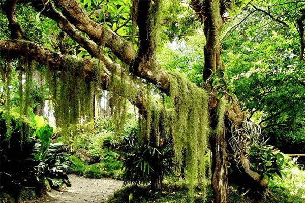

Reino plantae
O Reino Plantae ou Reino Vegetal é o grupo em que estão todas as plantas. Plantas são organismos eucariontes e multicelulares e, geralmente, fotossintetizantes. Apesar de muitas pessoas acreditarem que todas as plantas possuem a capacidade de realizar fotossíntese, isso não é verdade, uma vez que podemos encontrar plantas parasitas.
Last updated 3 mins ago